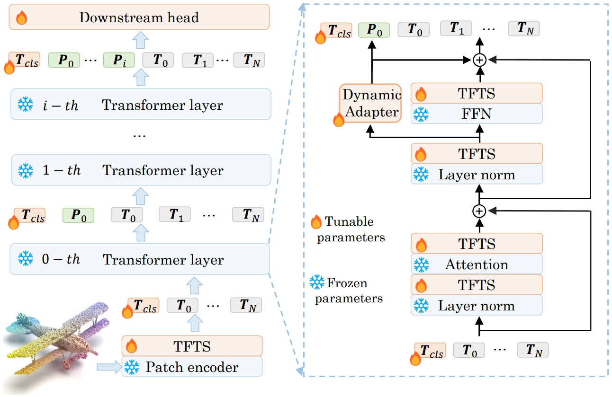
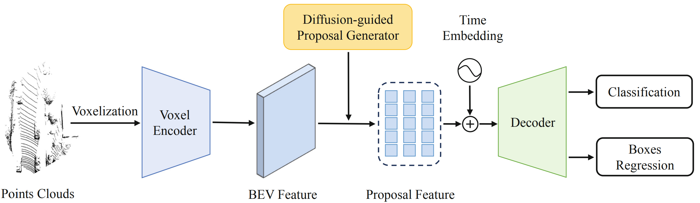

Xin Zhou
(周鑫)
Wuhan, Hubei, China
About Me
I am currently a 3-rd-year undergraduate student majoring in Artificial Intelligence at the School of Future Technology, Huazhong University of Science and Technology, under the supervision of Prof. Xiang Bai.
Research Interests
- 3D Vision: 3D object detection, point cloud analysis
- Generative Models: Generative models for autonomous driving (e.g., world model)
News
- [Apr. 2024] Invited to give a talk at FALML 2024 in Yichang, Hubei, on Parameter-Efficient Learning for Point Cloud Analysis (Best Oral Presentation Award).
- [Feb. 2024] One paper is accepted to CVPR 2024!
- [Feb. 2024] We preprint PointMamba on arXiv, check it out!
- [Jan. 2024] We opensource a collection of papers on World Models for Autonomous Driving , check it out and give a star🌟! The repository will keep updating.
- [Aug. 2023] One paper is accepted to PRCV 2023.
Publications (Full List)
(* Equal contribution)
-
 CVPR'24IEEE/CVF Conference on Computer Vision and Pattern Recognition (CVPR), 2024.
-
 PRCV'23Chinese Conference on Pattern Recognition and Computer Vision (PRCV), 2023.
 arXiv
arXiv
Participated Projects
- National Undergraduate Training Projects for Innovation and Entrepreneurship (20,000 RMB), 2023-2024. (As host. Completed. Rated Excellent)
- Taihu Lake Innovation Fund for Future Technology (200,000 RMB), 2023-2025.
Honors
- School of Optical and Electronic Information, HUST, 2023 Top 10 Newsmakers.
China Patent
- 基于扩散模型的三维点云目标检测方法与装置, CN116863426A (publication)
- 基于视觉Transformer的弱-半监督三维点云目标检测方法与装置, CN117115804A (publication)
Academic Service
- Conference Reviewer:
- European Conference on Computer Vision (ECCV), 2024
- Annual Conference on Neural Information Processing Systems (NeurIPS), 2024
- IEEE International Conference on Robotics and Automation (ICRA), 2024
- Science China-Information Science (SCIS)
Powered by Jekyll and Minimal Light theme.